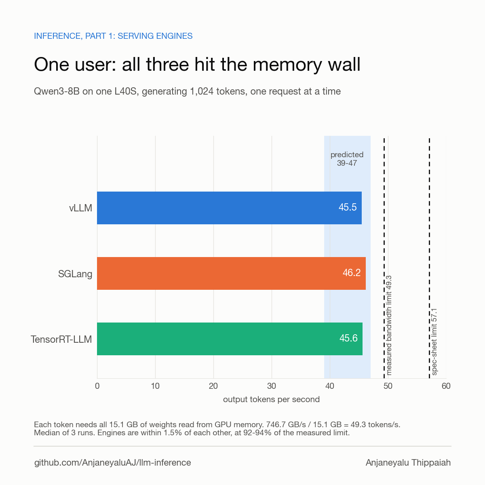
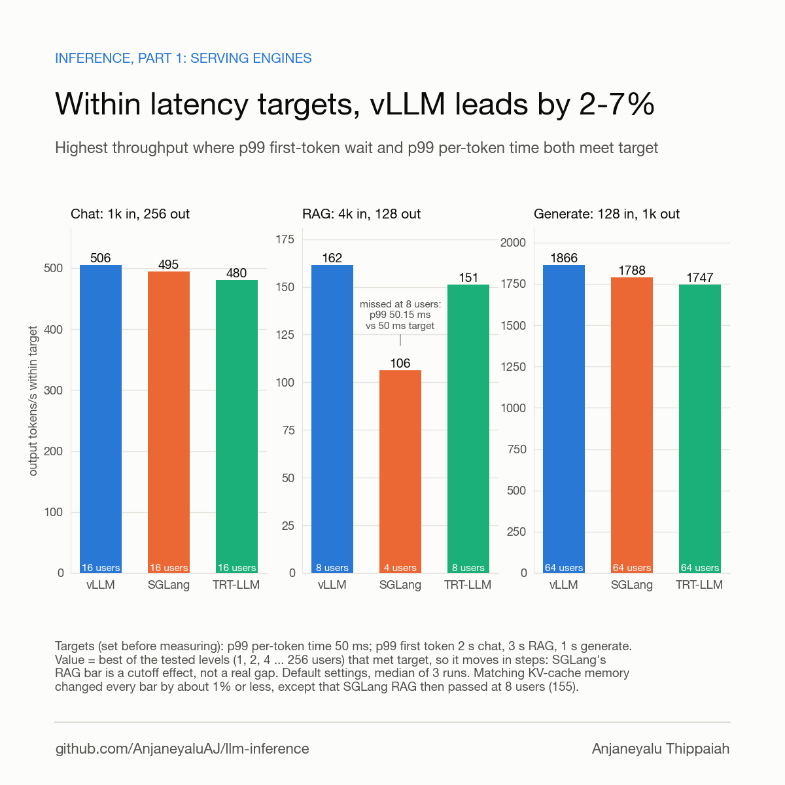
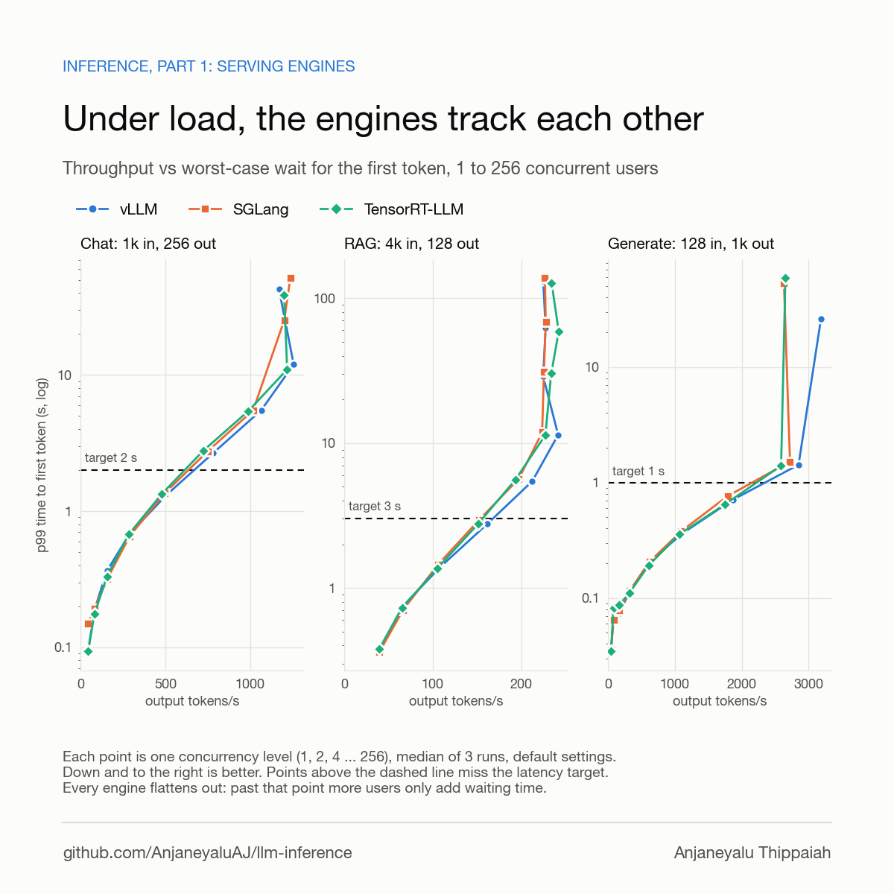

Three engines, one GPU, and a prediction I wrote down first
vLLM, SGLang and TensorRT-LLM serving the same model on the same GPU, measured over 110,808 requests. Then the whole thing checked again with NVIDIA's own benchmarking tool.
Code and data: AnjaneyaluAJ/llm-inference. The plan with its prediction, the load generator, every request, and the server and GPU logs.
Measured: 20 and 21 November 2026, on one NVIDIA L40S. The AIPerf cross-check ran on 21 November on the same machine.
My last series was about training a model from scratch. This one is about the other half of the job: serving a model to people, fast and cheaply. The first question sounds simple. For the same model on the same GPU, which serving engine is fastest? And does the answer change with the kind of traffic you send it?
Published comparisons often test one traffic shape or leave out the settings, and some come from the engine teams themselves. So I ran my own, wrote down what I expected before running it, and published every request.
The setup
- Model: Qwen3-8B in BF16, the same weights for every engine.
- GPU: one NVIDIA L40S 48 GB, on an AWS g6e.4xlarge ($3.00 an hour on-demand).
- Engines: vLLM v0.34.0, SGLang v0.5.23 and TensorRT-LLM 1.3.0 (PyTorch backend,
trtllm-serve), each from its official Docker image. - Client: my own load generator, the same for all three, talking to each engine's OpenAI-compatible API. Greedy decoding, and a fixed number of output tokens per request.
Three traffic shapes, because real applications look very different from each other:
| Workload | Tokens in | Tokens out | What it stresses |
|---|---|---|---|
| Chat | ~1,000 | 256 | a balance of both |
| RAG | ~4,000 | 128 | reading long prompts |
| Generate | 128 | ~1,000 | producing tokens |
Each workload ran at 1, 2, 4 and so on up to 256 users at once, three times, in two configurations (explained below), with the engine order shuffled every repeat. That is 110,808 measured requests over about 19 GPU-hours.
The prediction
When one person is using the model, the GPU generates one token at a time. For every single token it has to read all of the model's weights out of memory. Qwen3-8B has 16.38 GB of weights, of which 1.25 GB is an embedding table that only needs one row per token. So each token means reading about 15.14 GB.
NVIDIA's spec sheet says the L40S moves 864 GB/s. I measured it instead: 746.7 GB/s for a plain read. Divide one by the other and you get a hard ceiling. No engine can generate faster than about 49.3 tokens per second for one user on this GPU.
Before any engine ran, I committed this to GitHub: the fastest engine would reach 80-95% of that ceiling, so 39-47 tokens/s, and all three would be within 15% of each other.
Result: vLLM 45.5, SGLang 46.2, TensorRT-LLM 45.6 tokens/s. All three inside the predicted range, within 1.5% of each other, at 92-94% of the ceiling. With one user, serving is a memory-reading problem, and all three engines read memory about equally well.

Under load
One user is the easy case. With many users the engine has to batch requests together, decide what to run next, and fit everyone's context into memory. That is where I expected the engines to separate.
To compare them fairly I set latency targets before measuring anything. 99% of requests must see their first token within 2 seconds for chat, 3 seconds for RAG and 1 second for generate, and after that get a new token at least every 50 ms. Fifty milliseconds is 20 tokens a second, faster than people read. The number that matters is the most throughput an engine delivers while still meeting those targets.
| Workload | vLLM | SGLang | TensorRT-LLM | Users at that point |
|---|---|---|---|---|
| Chat | 506 | 495 | 480 | 16 |
| RAG | 162 | 106* | 151 | 8 (SGLang: 4) |
| Generate | 1,866 | 1,788 | 1,747 | 64 |
Output tokens per second within the latency targets, default settings, median of 3 repeats. *See "Check results that sit on a threshold" below.
vLLM leads, by 2-7%. That is a real but small lead. On RAG, vLLM's repeat-to-repeat spread was up to 5.8%, so its 7% lead over TensorRT-LLM there is only just outside the noise.

Ignore the latency targets and push to 256 users, and vLLM reaches 3,185 tokens/s on generate against 2,722 for SGLang and 2,653 for TensorRT-LLM, 17% ahead. But at that point the slowest 1% of users wait 25 seconds for their first word, so it is not a number you would run a product on. On chat and RAG the peaks were within 6% of each other.

What I learned
- The traffic matters far more than the engine. At $3 an hour and within the targets, vLLM served long generation at $0.45 per million output tokens, chat at $1.65 and RAG at $5.14. That is an 11x difference between workloads, and at most 7% between engines. If you are estimating serving costs, know your prompt and output lengths before you pick an engine.
- Check results that sit on a threshold. SGLang's RAG number looked 35% behind vLLM. It had missed the 50 ms target at 8 users by 0.15 ms (50.15 ms; 49.5 to 50.3 across the three repeats), so it was scored at the next level down, 4 users. With matched memory settings it passed at 8 users and scored 155. The gap came from where I drew the line and the fact that I only tested powers of two, not from the engine.
- Defaults are not equal, but here they did not decide anything. Out of the box the engines reserve different amounts of memory for the KV cache (the per-user context): room for 186k tokens on vLLM, 175k on TensorRT-LLM and 158k on SGLang. So I ran everything a second time with all three at exactly 147,456 tokens. Results moved by about 1% or less, apart from that SGLang threshold case. None of these workloads ran out of KV memory before they ran out of compute or latency budget.
- Greedy decoding is not exactly repeatable. I gave every engine and configuration the same 250 GSM8K math questions. Accuracy was 93.6% everywhere except vLLM with matched memory, at 94.4% (two more right). Any two runs agreed on the final answer for 244 to 250 of the 250 questions. But the full text was identical between engines on only 168 to 189 of them, and vLLM's own output changed on 61 questions when only the memory setting changed. The likely cause, which I have not verified: different batches change the order of the arithmetic, and that occasionally flips a near-tie between two tokens. SGLang gave identical text in both configurations.
- Not every anomaly is a finding. 18 of the 110,808 requests finished with the right token count but no text received, all at 64 or more users, on vLLM and TensorRT-LLM only. It could be the engines or my client. I counted them as errors (under 0.5% effect on throughput where they happened) and have not blamed anyone, because I cannot yet tell which.
Second opinion: NVIDIA AIPerf
All of the above was measured with a load generator I wrote. That is a weak point: if my client has a bias, every number has it. So I re-measured the engines with NVIDIA's AIPerf (version 0.14.0), running both tools back to back against the same running server, at 1, 16 and 64 users, three repeats, plus one 256-user stress run per engine.
- Throughput agreed. AIPerf divided by my client ranged from 0.987 to 1.021, and 24 of 27 points were within 1%.
- The conclusions did not change. The engine ranking was the same under both tools at all 9 workload and user-count combinations, and every pass or fail against the latency targets was the same at all 27 points.
- The median wait for the first token did not agree. At 16 to 64 users AIPerf read up to 31% lower, while the 99th percentile agreed within -9% to +5%. I found two causes. AIPerf sends its warm-up prompts again in the measured run, and the engine already has those cached. And AIPerf takes a few milliseconds longer to send the next request, which spreads out the bursts of new prompts. The first cause I could confirm from vLLM's cache counters. The second is the likely explanation but not proven.
- Token counts differ per request. AIPerf counts tokens by re-tokenizing the text it gets back, and that differed from the server's count on 1,231 of 8,910 requests, though only -0.04% in total.
The practical lesson: a median latency at moderate load depends on details of the client, so only compare such numbers when they come from the same tool. Throughput and 99th-percentile latency held up under an independent tool.
What this does not show
- One model and one GPU type. No H100: there was no on-demand capacity in the regions I tried.
- No engine-specific tuning. "Matched" means the same KV memory, not each engine at its best.
- Prompts were random tokens with unique prefixes, so prefix caching could not help any engine. Real chat traffic with shared system prompts would behave differently.
- Users were tested in steps of 2x (1, 2, 4 ... 256), so "within target" numbers move in steps. A request-rate sweep would give finer numbers.
- At the heaviest points the L40S hit its power and temperature limits (clocks dropped as low as about 1,350 MHz from a median of 2,040). That affected every engine, and the order was shuffled.
Next: a 32B model on eight GPUs
One GPU and an 8B model is the easy case. The next experiment moves to a 32B model that does not fit on one GPU, on eight L40S, to ask how to split the work: one copy of the model spread across GPUs, or several independent copies. Same three engines, both benchmark tools.
Write-up: results/step1 · AIPerf cross-check: results/toolcmp · Plan and prediction: docs/step1_engines_plan.md
Anjaneyalu T. Questions and corrections are welcome: email or LinkedIn.